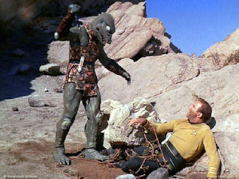

Humans in Funny Suits
❦
Many times the human species has travelled into space, only to find the stars inhabited by aliens who look remarkably like humans in funny suits—or even humans with a touch of makeup and latex—or just beige Caucasians in fee simple.

Star Trek: The Original Series, “Arena,” © CBS Corporation
It’s remarkable how the human form is the natural baseline of the universe, from which all other alien species are derived via a few modifications.
What could possibly explain this fascinating phenomenon? Convergent evolution, of course! Even though these alien life-forms evolved on a thousand alien planets, completely independently from Earthly life, they all turned out the same.
Don’t be fooled by the fact that a kangaroo (a mammal) resembles us rather less than does a chimp (a primate), nor by the fact that a frog (amphibians, like us, are tetrapods) resembles us less than the kangaroo. Don’t be fooled by the bewildering variety of the insects, who split off from us even longer ago than the frogs; don’t be fooled that insects have six legs, and their skeletons on the outside, and a different system of optics, and rather different sexual practices.
You might think that a truly alien species would be more different from us than we are from insects. As I said, don’t be fooled. For an alien species to evolve intelligence, it must have two legs with one knee each attached to an upright torso, and must walk in a way similar to us. You see, any intelligence needs hands, so you’ve got to repurpose a pair of legs for that—and if you don’t start with a four-legged being, it can’t develop a running gait and walk upright, freeing the hands.
… Or perhaps we should consider, as an alternative theory, that it’s the easy way out to use humans in funny suits.
But the real problem is not shape; it is mind. “Humans in funny suits” is a well-known term in literary science-fiction fandom, and it does not refer to something with four limbs that walks upright. An angular creature of pure crystal is a “human in a funny suit” if she thinks remarkably like a human— especially a human of an English-speaking culture of the late-twentieth/early-twenty-first century.
I don’t watch a lot of ancient movies. When I was watching the movie Psycho (1960) a few years back, I was taken aback by the cultural gap between the Americans on the screen and my America. The buttoned-shirted characters of Psycho are considerably more alien than the vast majority of so-called “aliens” I encounter on TV or the silver screen.
To write a culture that isn’t just like your own culture, you have to be able to see your own culture as a special case—not as a norm which all other cultures must take as their point of departure. Studying history may help—but then it is only little black letters on little white pages, not a living experience. I suspect that it would help more to live for a year in China or Dubai or among the !Kung… this I have never done, being busy. Occasionally I wonder what things I might not be seeing (not there, but here).
Seeing your humanity as a special case is very much harder than this.
In every known culture, humans seem to experience joy, sadness, fear, disgust, anger, and surprise. In every known culture, these emotions are indicated by the same facial expressions. Next time you see an “alien”—or an “AI,” for that matter—I bet that when it gets angry (and it will get angry), it will show the human-universal facial expression for anger.
We humans are very much alike under our skulls—that goes with being a sexually reproducing species; you can’t have everyone using different complex adaptations, they wouldn’t assemble. (Do the aliens reproduce sexually, like humans and many insects? Do they share small bits of genetic material, like bacteria? Do they form colonies, like fungi? Does the rule of psychological unity apply among them?)
The only intelligences your ancestors had to manipulate—complexly so, and not just tame or catch in nets—the only minds your ancestors had to model in detail—were minds that worked more or less like their own. And so we evolved to predict Other Minds by putting ourselves in their shoes, asking what we would do in their situations; for that which was to be predicted, was similar to the predictor.
“What?” you say. “I don’t assume other people are just like me! Maybe I’m sad, and they happen to be angry! They believe other things than I do; their personalities are different from mine!” Look at it this way: a human brain is an extremely complicated physical system. You are not modeling it neuron-by-neuron or atom-by-atom. If you came across a physical system as complex as the human brain which was not like you, it would take scientific lifetimes to unravel it. You do not understand how human brains work in an abstract, general sense; you can’t build one, and you can’t even build a computer model that predicts other brains as well as you predict them.
The only reason you can try at all to grasp anything as physically complex and poorly understood as the brain of another human being is that you configure your own brain to imitate it. You empathize (though perhaps not sympathize). You impose on your own brain the shadow of the other mind’s anger and the shadow of its beliefs. You may never think the words, “What would I do in this situation?,” but that little shadow of the other mind that you hold within yourself is something animated within your own brain, invoking the same complex machinery that exists in the other person, synchronizing gears you don’t understand. You may not be angry yourself, but you know that if you were angry at you, and you believed that you were godless scum, you would try to hurt you…
This “empathic inference” (as I shall call it) works for humans, more or less.
But minds with different emotions—minds that feel emotions you’ve never felt yourself, or that fail to feel emotions you would feel? That’s something you can’t grasp by putting your brain into the other brain’s shoes. I can tell you to imagine an alien that grew up in a universe with four spatial dimensions, instead of three spatial dimensions, but you won’t be able to reconfigure your visual cortex to see like that alien would see. I can try to write a story about aliens with different emotions, but you won’t be able to feel those emotions, and neither will I.
Imagine an alien watching a video of the Marx Brothers and having absolutely no idea what was going on, or why you would actively seek out such a sensory experience, because the alien has never conceived of anything remotely like a sense of humor. Don’t pity them for missing out; you’ve never antled.
You might ask: Maybe the aliens do have a sense of humor, but you’re not telling funny enough jokes? This is roughly the equivalent of trying to speak English very loudly, and very slowly, in a foreign country, on the theory that those foreigners must have an inner ghost that can hear the meaning dripping from your words, inherent in your words, if only you can speak them loud enough to overcome whatever strange barrier stands in the way of your perfectly sensible English.
It is important to appreciate that laughter can be a beautiful and valuable thing, even if it is not universalizable, even if it is not possessed by all possible minds. It would be our own special part of the gift we give to tomorrow. That can count for something too.
It had better, because universalizability is one metaethical notion that I can’t salvage for you. Universalizability among humans, maybe; but not among all possible minds.
And what about minds that don’t run on emotional architectures like your own—that don’t have things analogous to emotions? No, don’t bother explaining why any intelligent mind powerful enough to build complex machines must inevitably have states analogous to emotions. Natural selection builds complex machines without itself having emotions. Now there’s a Real Alien for you—an optimization process that really Does Not Work Like You Do.
Much of the progress in biology since the 1960s has consisted of trying to enforce a moratorium on anthropomorphizing evolution. That was a major academic slap-fight, and I’m not sure that sanity would have won the day if not for the availability of crushing experimental evidence backed up by clear math. Getting people to stop putting themselves in alien shoes is a long, hard, uphill slog. I’ve been fighting that battle on AI for years.
Our anthropomorphism runs very deep in us; it cannot be excised by a simple act of will, a determination to say, “Now I shall stop thinking like a human!” Humanity is the air we breathe; it is our generic, the white paper on which we begin our sketches. And we do not think of ourselves as being human when we are being human.
It is proverbial in literary science fiction that the true test of an author is their ability to write Real Aliens. (And not just conveniently incomprehensible aliens who, for their own mysterious reasons, do whatever the plot happens to require.) Jack Vance was one of the great masters of this art. Vance’s humans, if they come from a different culture, are more alien than most “aliens.” (Never read any Vance? I would recommend starting with City of the Chasch.) Niven and Pournelle’s The Mote in God’s Eye also gets a standard mention here.
And conversely—well, I once read a science fiction author (I think Orson Scott Card) say that the all-time low point of television science fiction was the Star Trek episode where parallel evolution has proceeded to the extent of producing aliens who not only look just like humans, who not only speak English, but have also independently rewritten, word for word, the preamble to the US Constitution.
This is the Great Failure of Imagination. Don’t think that it’s just about science fiction, or even just about AI. The inability to imagine the alien is the inability to see yourself—the inability to understand your own specialness. Who can see a human camouflaged against a human background?